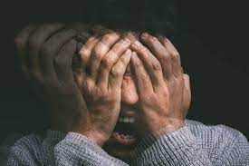

A Esquizofrenia é um transtorno mental crônico, grave e bastante complexo, que afeta a forma como a pessoa pensa, sente, percebe a realidade e se comporta. É uma condição psicótica, o que significa que o indivíduo perde o contato com a realidade em vários momentos, podendo apresentar delírios (crenças falsas) e alucinações (percepções sensoriais sem base real). A esquizofrenia não é, como muitos pensam erroneamente, sinônimo de "dupla personalidade" ou "loucura". Trata-se de uma desorganização global da mente, envolvendo o pensamento, o humor, a percepção e o comportamento. O transtorno geralmente começa a se manifestar na adolescência ou no início da vida adulta, com maior incidência entre os 15 e os 35 anos. Afeta homens e mulheres, embora em homens possa começar mais precocemente. As causas da esquizofrenia ainda não são totalmente compreendidas, mas sabe-se que há um forte componente genético, associado a alterações químicas no cérebro, especialmente envolvendo os neurotransmissores dopamina e glutamato. Além disso, fatores ambientais como complicações no parto, infecções cerebrais, uso precoce de drogas (particularmente maconha em altas doses na adolescência), traumas psicológicos e estresse extremo podem aumentar o risco de desenvolvimento. A esquizofrenia é dividida em tipos de sintomas: positivos, negativos e cognitivos. Os sintomas positivos incluem os comportamentos “adicionais” à experiência normal (como alucinações e delírios), enquanto os negativos representam perdas ou diminuições de habilidades normais (como o embotamento afetivo, isolamento e apatia). Os sintomas cognitivos envolvem déficits na memória, atenção e raciocínio. É comum que o primeiro surto psicótico ocorra de forma abrupta, mas geralmente é precedido por uma fase chamada pródromo, em que o indivíduo começa a apresentar mudanças sutis no comportamento, como isolamento social, queda no desempenho escolar ou profissional, desinteresse geral, alterações do sono, da alimentação e da fala. Por isso, familiares e amigos têm papel essencial na identificação precoce da doença. Embora a esquizofrenia seja crônica e sem cura definitiva, ela tem tratamento, e muitas pessoas podem levar uma vida relativamente estável com o apoio certo. O estigma ainda é um grande desafio: muitas pessoas com esquizofrenia enfrentam preconceito, exclusão e falta de oportunidades, o que agrava o sofrimento e dificulta o acesso a cuidados adequados. Por isso, a conscientização e a informação são essenciais para combater mitos e garantir dignidade aos que vivem com essa condição.
Os sintomas da esquizofrenia são geralmente classificados em três grandes grupos: positivos, negativos e cognitivos. Sintomas positivos: São chamados de "positivos" porque representam uma distorção ou excesso de funções normais do cérebro. Os principais são: Alucinações: percepções sensoriais sem estímulo real. A mais comum é a auditiva (ouvir vozes que não existem), mas também podem ocorrer alucinações visuais, táteis, olfativas ou gustativas. Delírios: crenças falsas que não correspondem à realidade e que são mantidas mesmo com evidências contrárias. Por exemplo, acreditar que está sendo perseguido (delírio persecutório), que tem poderes especiais (delírio de grandeza), ou que está sendo controlado por forças externas. Desorganização do pensamento: o discurso do indivíduo pode ser confuso, ilógico, com frases sem conexão, uso de palavras inventadas, saltos de ideia abruptos. Comportamento motor anormal: isso inclui agitação sem motivo, posturas estranhas, ou, ao contrário, catatonia (movimento reduzido ou ausência de reação ao ambiente). Sintomas negativos: Representam uma diminuição ou ausência de comportamentos e emoções normais, como: Apatia: falta de interesse em atividades antes prazerosas. Isolamento social: afastamento de amigos, família e convivência social. Embotamento afetivo: dificuldade em expressar emoções, rosto sem expressão. Anedonia: incapacidade de sentir prazer. Redução da fala: respostas curtas, com pouca iniciativa de conversa. Sintomas cognitivos: Mais sutis, mas profundamente debilitantes. Incluem: Dificuldade de concentração e atenção. Problemas de memória de curto prazo. Dificuldade em planejar ou executar tarefas simples. Julgamento e percepção de risco prejudicados. Esses sintomas variam de pessoa para pessoa, e o quadro pode ser mais leve ou mais grave. Em geral, a esquizofrenia se apresenta em fases, com períodos de surto (crises agudas) e fases de estabilidade (remissão parcial ou total dos sintomas).
O tratamento da esquizofrenia é multifacetado, contínuo e centrado no uso de medicamentos antipsicóticos e psicossocial, visando à reabilitação e reinserção do indivíduo na sociedade. Não existe cura, mas há formas eficazes de controle que permitem melhorar significativamente a qualidade de vida. O primeiro passo é o uso de antipsicóticos, que atuam principalmente regulando os níveis de dopamina no cérebro. Esses medicamentos ajudam a reduzir ou eliminar os sintomas positivos (como delírios e alucinações), prevenindo recaídas e surtos psicóticos. Alguns exemplos incluem risperidona, olanzapina, quetiapina e clozapina. É comum que haja efeitos colaterais, e o acompanhamento psiquiátrico é fundamental para ajustar doses e tipos de medicação conforme a resposta individual. Além da farmacoterapia, a psicoterapia desempenha papel essencial. A Terapia Cognitivo-Comportamental pode ajudar o paciente a reconhecer padrões de pensamento distorcidos, desenvolver estratégias para lidar com os sintomas e melhorar a funcionalidade geral. Outras abordagens psicossociais envolvem terapia ocupacional, grupos de apoio, reabilitação cognitiva e acompanhamento familiar. A educação dos familiares é uma parte crítica do processo. Entender a doença, suas manifestações e como lidar com as crises é vital para criar um ambiente de apoio e estabilidade. Famílias bem informadas conseguem contribuir muito mais eficazmente para a recuperação do ente querido, evitando críticas, cobranças excessivas ou superproteção. É importante também que a pessoa com esquizofrenia tenha rotina estruturada, acesso a serviços de saúde mental, apoio comunitário e, sempre que possível, inserção em atividades produtivas. Trabalhos adaptados, estudos com suporte e ambientes compreensivos fazem toda a diferença na autonomia do paciente. Evitar isolamento, drogas e álcool é crucial, pois essas substâncias agravam os sintomas e aumentam o risco de recaídas. Em casos mais graves, pode ser necessária a internação psiquiátrica temporária, especialmente em momentos de surto, mas o ideal é sempre promover o tratamento em liberdade e com suporte contínuo. A pessoa com esquizofrenia não deve ser vista apenas por sua doença. Com tratamento adequado, empatia e apoio, ela pode estudar, trabalhar, formar família e participar plenamente da sociedade. O que mais dificulta essa realidade, muitas vezes, não é a doença em si, mas o preconceito que ainda cerca os transtornos mentais. Por isso, conhecer e falar abertamente sobre a esquizofrenia é um passo essencial rumo à inclusão e à dignidade.